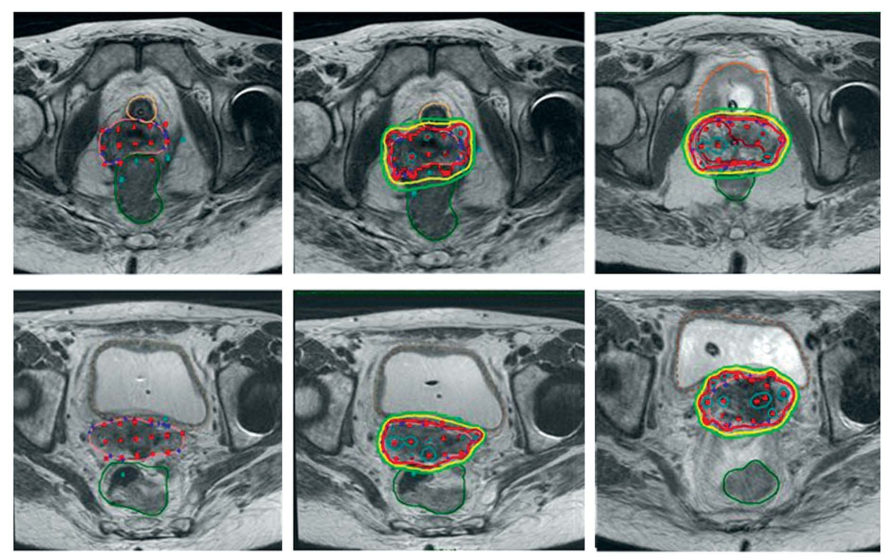
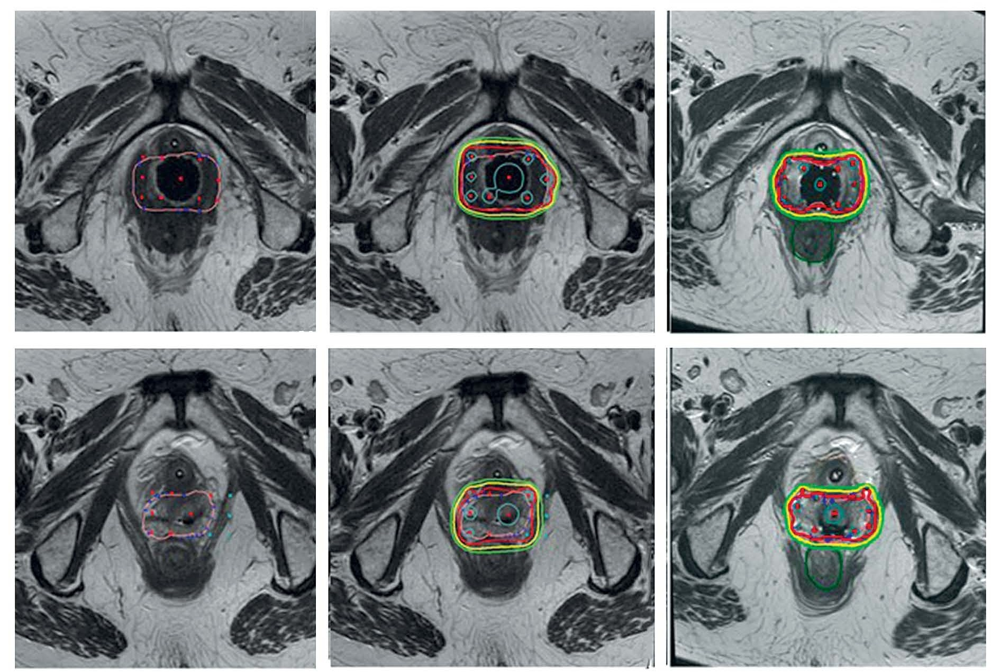

3 Resultados
3.1 A method to incorporate interstitial components into the TPS gynecologic rigid applicator library (Otal2017 publicado en febrero de 2017)
El método se ha aplicado a 25 pacientes. Mediante este trabajo se ha puesto de manifiesto que la generación de diferentes disposiciones de agujas puede adaptarse a muchas circunstancias clínicas (número de agujas, profundidades de inserción, etc.). Con el TB, como se explicó anteriormente, se ha desarrollado una aplicación específica para configurar las agujas, tanto su presencia como la profundidad a la que se insertan. La figura 5 muestra ambos aplicadores después de su implementación en el sistema Oncentra. La Figura 6 ilustra la reconstrucción del aplicador Utrecht y del TB en imágenes de MR T2. Este procedimiento de reconstrucción es eficiente y reduce la incertidumbre. Además, toda la reconstrucción y planificación se realiza con una única secuencia de MRI T2, que como se ha mencionado anteriormente es la modalidad de imagen recomendada como óptima para el contorneo1–4.
3.2 Pre-plan technique feasibility in multi-interstitial/endocavitary perineal gynecological brachytherapy (Rodriguez2017 publicado en octubre 2017)
La aplicación Java desarrollada presenta una interfaz de usuario amigable, como se muestra en la figura 3.1. El usuario puede seleccionar de manera intuitiva las agujas (tanto rectas como divergentes) y la medida que proporciona el oncólogo radioterápico de la longitud libre y por tanto de la profundidad implantada. Con esta información se genera un modelo adaptado para la biblioteca de aplicadores de las agujas y profundidades elegidas. Este modelo se superpone a la MRI previa al implante. Una vez seleccionado el número virtual específico de agujas y profundidades, se realiza un plan virtual en Oncentra TPS y se optimiza según los objetivos de cobertura de los volúmenes a tratar y de la protección de los OAR. La figura 3.2 muestra un caso de pre-plan virtual de MRI y su planificación ya con el implante hecho. En el plan virtual, la plantilla se reconstruye utilizando la biblioteca del trabajo descrito en la sección 3.1.



3.3 Review on Treatment Planning Systems for Cervix Brachytherapy (Interventional Radiotherapy): Some Desirable and Convenient Practical Aspects to Be Implemented from Radiation Oncologist and Medical Physics Perspectives (Otal2022 publicado en julio 2022)
Después de que los especialistas presentaran las demostraciones, respondieron las preguntas planteadas por los autores. Sus respuestas al cuestionario se resumen en esta sección siguiendo el esquema descrito en la sección Materiales y Métodos, junto con los comentarios de los autores.
3.3.1 A1—Herramientas de puesta en marcha y control de calidad
Sólo uno de los TPS permite la modificación de la ruta de origen dentro de la biblioteca de aplicadores. Es fundamental para aplicadores curvos, como anillos u ovoides, donde la fuente suele moverse cerca de la pared del aplicador y lejos del eje de simetría.
De los tres TPSs analizados, sólo dos incluyen la posibilidad de realizar cálculos de MBDCA. Ninguno de los casos de prueba disponibles en el momento en que se escribió el manuscrito eran casos clínicos ginecológicos aunque WG-DCAB actualmente está desarrollando casos de prueba específicos para ginecología. Sin embargo, el Caso de Prueba 4, aunque no se parece del todo a una situación clínica, incorpora un aplicador ginecológico genérico blindado y, por tanto, es la más interesante para que el usuario clínico ponga en marcha el TPS. Ninguno de los TPSs analizados incorpora un conjunto completo de herramientas para realizar este proceso de puesta en marcha, lo que requiere que el usuario clínico utilice herramientas externas, como BrachyGuide5 o AMIGO6.
En cuanto a la puesta en marcha del cálculo de dosis por parte del TG43, los autores creen que el procedimiento de verificación no es todo lo operativo que debería. La dosis que devuelve el TPS para puntos específicos se comparará con las tablas de consenso utilizando las funciones del protocolo TG43 para un modelo fuente determinado. Sin embargo, estos puntos sólo se pueden ingresar mediante el teclado y uno a uno. Es deseable un método más ágil y menos propenso a errores.
3.3.2 A2—Registro de imágenes y utilidades para gestionar información de tratamientos previos
Los tres TPS permiten un registro rígido, aunque solamente uno incluye la posibilidad de registro de imagen deformable.
En teoría, el registro deformable coincidiría y sumaría la dosis en cada vóxel combinando cada fracción de EBRT con la contribución correspondiente de BT. Sin embargo, ninguno de los TPS disponibles incluye la tecnología necesaria para rastrear el efecto en estructuras biológicamente significativas dentro de los volúmenes objetivo y OAR sin utilizar software externo compatible. Por esta razón, GEC-ESTRO recomienda asumir que las paredes de los órganos adyacentes al aplicador de BT y los volúmenes objetivo recibieron la dosis prescrita de EBRT. Este enfoque conservador, que ya se utiliza ampliamente en la práctica clínica, ha proporcionado resultados fiables tanto para los volúmenes objetivo como para los OAR estáticos, a pesar de ser una suposición bastante importante. Además, siguiendo una de las recomendaciones de EMBRACE II para la planificación de EBRT, se podría generar una región de control alrededor del CTV-HR de 10 mm de espesor para establecer un requisito de homogeneidad de dosis con el fin de evitar puntos críticos en los OAR cercanos al CTV-HR, que probablemente también recibirán una dosis considerable de BT. Se debe prestar especial atención en los casos de EBRT con múltiples PTVs y dosis debido a las dosis más altas en los D2cc de los OAR.
3.3.3 A3—Contorneo en MRI. Eliminar la componente intracavitaria
Ninguno de los TPSs permite retirar el anillo u los ovoides de la MRI. En el caso de utilizar bibliotecas de aplicadores para la reconstrucción, la información sobre la posición del aplicador junto con su composición podría ayudar a resolver este problema en futuras versiones de los TPSs.
3.3.4 A4—Reconstrucción de catéteres. Bibliotecas de la componente intracavitaria
Todos los TPS analizados tienen acceso a bibliotecas virtuales de aplicadores intracavitarios para la reconstrucción de catéteres. Como se discutió anteriormente, es útil para facilitar y reducir la incertidumbre en la fase de reconstrucción. La DR es una alternativa a este tipo de reconstrucción y la única solución para aplicadores no rígidos, especialmente para la parte intersticial, disponible comercialmente. Sin embargo, tomando el ejemplo de la reconstrucción de un aplicador de anillo que incluye un tándem, ambas partes deben tratarse como dos elementos diferentes de la biblioteca de aplicadores. Por otra parte, el tándem está unido al anillo, por lo que no son estrictamente independientes y pueden ofrecer restricciones geométricas adicionales que podrían usarse para mejorar su reconstrucción. Sería deseable desarrollar más esta idea.
Todos los especialistas mencionan la intención de mejorar el algoritmo de posicionamiento automático de los canales de la fuente en la MRI porque reconocieron la incertidumbre inherente en todos los casos. Los TPSs ya incorporan dichas herramientas, pero sólo son precisas cuando se utilizan en imágenes de CT. Hrinivich et al.7 han desarrollado un método de auto-reconstrucción del anillo y del tándem utilizando MRI ponderada en T2 con un algoritmo basado en el registro del modelo de superficie tridimensional, optimizado maximizando el gradiente de intensidad de la imagen normal a la superficie del modelo.
3.3.5 A5—Reconstrucción de agujas. Parte intersticial
En el caso de la reconstrucción de la parte intersticial, los TPS permiten reconstruir las agujas a través de la zona negra que dejan las agujas de plástico y el desplazamiento entre la punta y la primera posición de parada. Sin embargo, en algunos casos el área negra no se ve con suficiente claridad para realizar dicha reconstrucción de manera eficiente.
En la misma línea, tal y como se ha comentado para la parte intracavitaria, el recorrido de la aguja no es del todo independiente del resto del aplicador. Richart et al.8 sugieren un método para reconstruir las agujas en el aplicador de Utrecht basado en la longitud insertada de cada aguja según lo informado por el ORT en el momento de la inserción. Esta distancia se determina utilizando una regla grabada en la herramienta de inserción (ver figura 2.1 (b)). En otras palabras, la distancia entre el orificio de salida del aplicador y la punta de la aguja es la distancia denominada free length.
Tomando el concepto de free length, Otal et al.9 desarrollaron un método para incluir el componente intersticial como un elemento de la biblioteca de aplicadores. En tal modelo, las agujas salen de los agujeros del ovoide. Tienen una longitud igual a la free length y a la dirección de la cavidad en el ovoide. Una vez colocada la primera parte, se colocan las agujas sobre la zona negra, realizando rotaciones alrededor del orificio de salida, manteniendo el punto de salida del ovoide invariante.
Paralelamente a las soluciones basadas en bibliotecas de aplicadores, algunos grupos continúan trabajando en métodos de reconstrucción directa. Aunque el diámetro de la aguja es un desafío para el desarrollo de dummies, ya se están desarrollando posibles soluciones. Shaaer et al.10 han probado una dummy para MRI destinada a la componente intersticial. En una publicación posterior, con la ayuda de esos marcadores, el mismo grupo realizó una segmentación automática del catéter utilizando una red neuronal convolucional utilizando el modelo U-Net, realizando una reconstrucción con aguja después de un post procesado de la segmentación previa11.
3.3.6 A6—Interpolación de imágenes
Dos de los tres TPSs estudiados incluyen la probabilidad de acceder a cortes interpolados entre dos adquiridos. El tercer TPS tiene modelos de agujas en su biblioteca de aplicadores, pero sólo en el caso de las rectas. Todos los especialistas mencionaron la intención del fabricante de mejorar el algoritmo de colocación automática en los conjuntos de imágenes de resonancia magnética porque reconocieron la importante incertidumbre en las versiones actuales de los TPSs.
3.3.7 A7—Uso del EQD2 en la optimización del tratamiento
Sólo uno de los TPSs tiene la opción de importar la información dosimétrica de las fracciones dadas previamente. En este caso, la información del DVH se agrega directamente a la planificación de BT y se transforma a unidades EQD2 en función de los valores α/β introducidos por el usuario. No hay una suma de las distribuciones de dosis y los DVH solamente se extraen de las fracciones de EBRT. Sería más conveniente si dicho proceso iterativo se integrara en el TPS y se incorporara a la fase de optimización.
3.3.8 A8—Uso del EQD2 para evaluar el tratamiento con la parte de radioterapia externa. Restricciones óptimas y obligatorias
Para obtener el efecto biológico de las fases EBRT y BT en términos de EQD2, es necesario sumar la contribución de las fracciones de BT dadas con la mayor precisión posible12. Si bien todos los especialistas coincidieron en la importancia de este punto, los TPSs actuales carecen de las herramientas necesarias para optimizar las fracciones BT considerando las fracciones EBRT dadas anteriormente.
Swamidas et al.13 y Kim et al.14 proporcionan una descripción general del estado actual del registro de imágenes para la acumulación de dosis en BT ginecológica guiada por imágenes, incluida la combinación con radioterapia externa. Ambos estudios de revisión concluyen que, aunque los algoritmos de registro de imágenes deformables son una herramienta prometedora para la acumulación de dosis de EBRT, BT y BT multi fraccionada, se requiere más investigación y desarrollo antes de que estén listos para su aplicación clínica, especialmente para evaluar las incertidumbres que surgen del registro deformable.
Los TPSs actuales tienen limitaciones al calcular distribuciones de dosis acumuladas y al derivar un DVH compuesto de los planes EBRT y BT en EQD2. Sería deseable promover la investigación y evolución de algoritmos de registro deformable y adaptarlos a las complejidades de la planificación del tratamiento de radioterapia de cérvix.
3.3.9 A9—Bloqueo de pesos
Todos los TPSs incluyen herramientas para modificar los tiempos de permanencia: variación manual de tiempos, normalización a puntos o líneas de referencia, renormalización general y optimización gráfica, entre otras. La capacidad de bloquear catéteres individuales y posiciones de permanencia, haciendo que los tiempos de permanencia no sean modificables, solo se incluyó en uno de los TPSs. Esta herramienta es de gran ayuda ya que facilita el control del peso de cada componente (tándem, ovoides/anillo e intersticial).
3.3.10 A10—Métodos de optimización. Registro de los parámetros D90 y D2cc
En todos los TPSs se ofrece optimización inversa basada en las métricas dosimétricas objetivas (D90 , D2cc , …). También se informa el valor de D2cc extraído del DVH. Aunque estos módulos de optimización tienen el potencial de ofrecer distribuciones de dosis clínicamente aceptables, ninguno de los TPS proporcionó el control requerido del gradiente de dosis alrededor de las agujas a pesar de tener parámetros específicos para modularlo. Otra herramienta interesante ya incorporada en los algoritmos de optimización inversa de EBRT es la posibilidad de partir de una solución dada por el usuario y utilizarla como estado inicial en el proceso de optimización. Los TPSs de BT serían mucho más utiles si incorporasen la citada posibilidad.
3.3.11 A11—Resolución de los histogramas dosis-volumen
Solamente uno de los TPSs analizados gestiona adecuadamente esta cuestión. En los demás casos no se especificó claramente.
3.3.12 A12—Localización de los puntos D2cc
Todos los especialistas coincidieron en que la ubicación del parámetro D2cc de cada uno de los OAR es fundamental. Uno de los TPSs incluye una opción que localiza el plano con el valor máximo para una estructura particular, mostrando la contribución de cada fuente a ese punto. El resto no menciona ninguna solución similar.
Un valor numérico de D2cc como restricción en el recto y la vejiga sin conocer la distribución de ese conjunto de puntos calientes no es suficiente para predecir toxicidades posteriores. Por lo tanto como apuntamos en la sección 2.3.12 es fundamental conocer la posición de dichos puntos en ese órgano. La ubicación particular de estos puntos de dosis altas puede requerir una nueva optimización de la distribución de dosis. En consecuencia, los autores sostienen que es crucial incluir en los TPS herramientas que hagan visibles estas áreas de dosis altas o, incluso preferiblemente, incluir estas posiciones como datos de entrada en futuros algoritmos de optimización.
3.3.13 A13—Algoritmos de cálculo por heterogeneidad en BT (MBDCA)
Debido a su relevancia clínica, los tratamientos de cérvix estuvieron entre los primeros en ser analizados desde la perspectiva de los MBDCA. Se han realizado evaluaciones retrospectivas del impacto de las heterogeneidades en el caso de los planes hechos con el sistema de Manchester15–17. Se informó de un pequeño impacto en los parámetros dosimétricos calculados del TG-43, observándose cambios menores en las dosis de los Puntos A y B y los parámetros volumétricos D2cc y D90. Se observaron puntos calientes y fríos con una diferencia de aproximadamente el 10 % en ubicaciones particulares dentro del de los volúmenes así como que la atenuación en las paredes del aplicador de titanio contribuyeron aproximadamente en un 1,3 % a estas reducciones. Hofbauer et al.18 reevaluaron los planes de tratamiento administrados con aplicadores de plástico en tándem y de anillo con componente intersticial con de 3 a 10 agujas adicionales cuando fue necesario. Los autores informaron de un impacto dosimétrico mínimo, con D90 y V100 para CTV de alto riesgo reducidos en menos del 0,5 % y D2cc y D0,1cc para OAR reducidos en menos del 2 %. Abe et al.19 evaluaron el impacto en el D2cc de recto de su contenido de gas en pacientes tratados mediante diferentes técnicas. Los autores informaron diferencias con respecto al TG-43 en el rango de 11,9 ± 2,6 % (contenido total de gas) a 0,8 ± 2,0 % (lleno con material equivalente a agua).
Por lo tanto, está claro que, aunque los MBDCA pueden ofrecer información adicional sobre las dosis depositadas, el impacto clínico de las diferencias encontradas con respecto a los parámetros clínicos basados en TG-43 son insignificantes para la BT de cérvix basada en MRI.